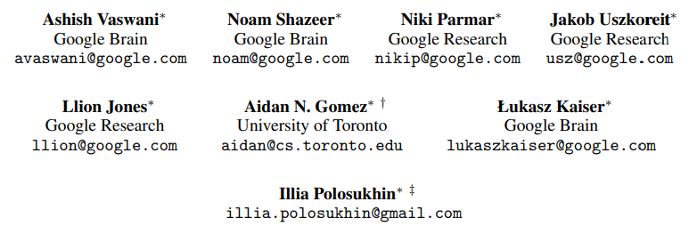
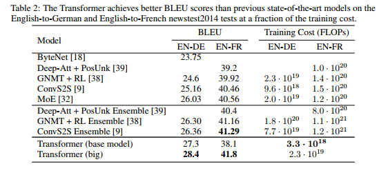

加餐 B02 · The Annotated Transformer 中文全译
译文说明与许可
本页是 The Annotated Transformer（Sasha Rush 等，Harvard NLP）的中文全译，逐字翻译自官方仓库 harvardnlp/annotated-transformer 的 AnnotatedTransformer.ipynb——共 124 个单元格：73 段正文全部译出，51 段实现代码逐字节保留（注释已译为中文）。原文与代码以 MIT 许可发布，本译文同样以 MIT 许可发布；转载请注明原作与本页。插图沿用原文生成图像，图内文字未译。术语对照：attention=注意力、embedding=嵌入、mask=掩码、positional encoding=位置编码、label smoothing=标签平滑、warmup=预热。
注解版 Transformer(The Annotated Transformer)
Attention is All You Need(注意力就是你所需要的一切)

- v2022 版:Austin Huang、Suraj Subramanian、Jonathan Sum、Khalid Almubarak 与 Stella Biderman。
- 原版:Sasha Rush。
在过去的 ~~一年~~ 五年里,Transformer 一直萦绕在许多人的心头。本文以逐行实现的形式,呈现这篇论文的注解版。它对原论文的若干章节做了重排与删减,并在全文中加入了注释。本文档本身就是一个可运行的 notebook,应当是一份完全可用的实现。代码可在此处获取。
目录
预备知识
# !pip install -r requirements.txt# # 在 colab 上使用时请取消注释
# #
# !pip install -q torchdata==0.3.0 torchtext==0.12 spacy==3.2 altair GPUtil
# !python -m spacy download de_core_news_sm
# !python -m spacy download en_core_web_smimport os
from os.path import exists
import torch
import torch.nn as nn
from torch.nn.functional import log_softmax, pad
import math
import copy
import time
from torch.optim.lr_scheduler import LambdaLR
import pandas as pd
import altair as alt
from torchtext.data.functional import to_map_style_dataset
from torch.utils.data import DataLoader
from torchtext.vocab import build_vocab_from_iterator
import torchtext.datasets as datasets
import spacy
import GPUtil
import warnings
from torch.utils.data.distributed import DistributedSampler
import torch.distributed as dist
import torch.multiprocessing as mp
from torch.nn.parallel import DistributedDataParallel as DDP
# 设为 False 可跳过 notebook 的执行(例如用于调试)
warnings.filterwarnings("ignore")
RUN_EXAMPLES = True# 本 notebook 全程会用到的一些便捷辅助函数
def is_interactive_notebook():
return __name__ == "__main__"
def show_example(fn, args=[]):
if __name__ == "__main__" and RUN_EXAMPLES:
return fn(*args)
def execute_example(fn, args=[]):
if __name__ == "__main__" and RUN_EXAMPLES:
fn(*args)
class DummyOptimizer(torch.optim.Optimizer):
def __init__(self):
self.param_groups = [{"lr": 0}]
None
def step(self):
None
def zero_grad(self, set_to_none=False):
None
class DummyScheduler:
def step(self):
None我的注释以引用块形式呈现。正文全部来自论文本身。
背景
减少顺序计算这一目标同样构成了 Extended Neural GPU、ByteNet 和 ConvS2S 的基础,它们都以卷积神经网络作为基本构建模块,为所有输入与输出位置并行地计算隐藏表示。在这些模型中,要关联来自任意两个输入或输出位置的信号,所需的运算次数会随位置间的距离而增长:对 ConvS2S 是线性增长,对 ByteNet 是对数增长。这使得学习远距离位置之间的依赖变得更加困难。在 Transformer 中,这一开销被降低为常数次运算,尽管代价是:由于对注意力加权的位置取平均,有效分辨率有所下降,我们用多头注意力(Multi-Head Attention)来抵消这一影响。
自注意力(self-attention),有时也称为内部注意力(intra-attention),是一种把单个序列中不同位置关联起来、以计算该序列表示的注意力机制。自注意力已被成功地用于多种任务,包括阅读理解、抽象式摘要、文本蕴涵,以及学习与任务无关的句子表示。端到端记忆网络则基于一种循环注意力机制,而非序列对齐的循环结构,并且已被证明在简单语言问答与语言建模任务上表现良好。
然而,据我们所知,Transformer 是第一个完全依靠自注意力来计算其输入与输出表示的转换(transduction)模型,不使用序列对齐的 RNN 或卷积。
第 1 部分:模型架构
模型架构
大多数有竞争力的神经序列转换模型都具有编码器-解码器(encoder-decoder)结构(引用)。在这里,编码器把符号表示的输入序列 (x1, …, xn) 映射为连续表示的序列 z = (z1, …, zn)。给定 z,解码器随后一次一个元素地生成符号输出序列 (y1, …, ym)。在每一步中,模型都是自回归的(引用),在生成下一个符号时,会把之前已生成的符号作为额外输入加以消耗。
class EncoderDecoder(nn.Module):
"""
A standard Encoder-Decoder architecture. Base for this and many
other models.
"""
def __init__(self, encoder, decoder, src_embed, tgt_embed, generator):
super(EncoderDecoder, self).__init__()
self.encoder = encoder
self.decoder = decoder
self.src_embed = src_embed
self.tgt_embed = tgt_embed
self.generator = generator
def forward(self, src, tgt, src_mask, tgt_mask):
"Take in and process masked src and target sequences."
return self.decode(self.encode(src, src_mask), src_mask, tgt, tgt_mask)
def encode(self, src, src_mask):
return self.encoder(self.src_embed(src), src_mask)
def decode(self, memory, src_mask, tgt, tgt_mask):
return self.decoder(self.tgt_embed(tgt), memory, src_mask, tgt_mask)class Generator(nn.Module):
"Define standard linear + softmax generation step."
def __init__(self, d_model, vocab):
super(Generator, self).__init__()
self.proj = nn.Linear(d_model, vocab)
def forward(self, x):
return log_softmax(self.proj(x), dim=-1)Transformer 遵循这一整体架构,在编码器和解码器中都使用堆叠的自注意力和逐点、全连接的层,分别如图 1 的左半部分和右半部分所示。

编码器与解码器堆栈
编码器
编码器由 N = 6 个相同层堆叠而成。
def clones(module, N):
"Produce N identical layers."
return nn.ModuleList([copy.deepcopy(module) for _ in range(N)])class Encoder(nn.Module):
"Core encoder is a stack of N layers"
def __init__(self, layer, N):
super(Encoder, self).__init__()
self.layers = clones(layer, N)
self.norm = LayerNorm(layer.size)
def forward(self, x, mask):
"Pass the input (and mask) through each layer in turn."
for layer in self.layers:
x = layer(x, mask)
return self.norm(x)我们在两个子层中的每一个周围采用残差连接（residual connection）（引用），随后进行层归一化（layer normalization）（引用）。
class LayerNorm(nn.Module):
"Construct a layernorm module (See citation for details)."
def __init__(self, features, eps=1e-6):
super(LayerNorm, self).__init__()
self.a_2 = nn.Parameter(torch.ones(features))
self.b_2 = nn.Parameter(torch.zeros(features))
self.eps = eps
def forward(self, x):
mean = x.mean(-1, keepdim=True)
std = x.std(-1, keepdim=True)
return self.a_2 * (x - mean) / (std + self.eps) + self.b_2也就是说，每个子层的输出为 LayerNorm(x + Sublayer(x))，其中 Sublayer(x) 是由该子层自身实现的函数。在每个子层的输出被加到子层输入并进行归一化之前，我们对其应用 dropout（引用）。
为了便于实现这些残差连接，模型中的所有子层以及嵌入层都产生维度为 dmodel = 512 的输出。
class SublayerConnection(nn.Module):
"""
A residual connection followed by a layer norm.
Note for code simplicity the norm is first as opposed to last.
"""
def __init__(self, size, dropout):
super(SublayerConnection, self).__init__()
self.norm = LayerNorm(size)
self.dropout = nn.Dropout(dropout)
def forward(self, x, sublayer):
"Apply residual connection to any sublayer with the same size."
return x + self.dropout(sublayer(self.norm(x)))每个层有两个子层。第一个是多头自注意力（multi-head self-attention）机制，第二个是简单的、逐位置（position-wise）全连接前馈网络。
class EncoderLayer(nn.Module):
"Encoder is made up of self-attn and feed forward (defined below)"
def __init__(self, size, self_attn, feed_forward, dropout):
super(EncoderLayer, self).__init__()
self.self_attn = self_attn
self.feed_forward = feed_forward
self.sublayer = clones(SublayerConnection(size, dropout), 2)
self.size = size
def forward(self, x, mask):
"Follow Figure 1 (left) for connections."
x = self.sublayer[0](x, lambda x: self.self_attn(x, x, x, mask))
return self.sublayer[1](x, self.feed_forward)解码器
解码器同样由 N = 6 个相同层堆叠而成。
class Decoder(nn.Module):
"Generic N layer decoder with masking."
def __init__(self, layer, N):
super(Decoder, self).__init__()
self.layers = clones(layer, N)
self.norm = LayerNorm(layer.size)
def forward(self, x, memory, src_mask, tgt_mask):
for layer in self.layers:
x = layer(x, memory, src_mask, tgt_mask)
return self.norm(x)除了每个编码器层中的两个子层之外，解码器还插入了第三个子层，该子层对编码器堆栈的输出执行多头注意力（multi-head attention）。与编码器类似，我们在每个子层周围采用残差连接，随后进行层归一化。
class DecoderLayer(nn.Module):
"Decoder is made of self-attn, src-attn, and feed forward (defined below)"
def __init__(self, size, self_attn, src_attn, feed_forward, dropout):
super(DecoderLayer, self).__init__()
self.size = size
self.self_attn = self_attn
self.src_attn = src_attn
self.feed_forward = feed_forward
self.sublayer = clones(SublayerConnection(size, dropout), 3)
def forward(self, x, memory, src_mask, tgt_mask):
"Follow Figure 1 (right) for connections."
m = memory
x = self.sublayer[0](x, lambda x: self.self_attn(x, x, x, tgt_mask))
x = self.sublayer[1](x, lambda x: self.src_attn(x, m, m, src_mask))
return self.sublayer[2](x, self.feed_forward)我们还修改了解码器堆栈中的自注意力子层，以防止各个位置关注其后续位置。这种掩码（mask）与输出嵌入偏移一个位置的事实相结合，确保对位置 i 的预测只能依赖小于 i 的位置上已知的输出。
def subsequent_mask(size):
"Mask out subsequent positions."
attn_shape = (1, size, size)
subsequent_mask = torch.triu(torch.ones(attn_shape), diagonal=1).type(
torch.uint8
)
return subsequent_mask == 0下方的注意力掩码显示了每个目标词（行）允许查看的位置（列）。在训练期间，词被阻止去关注未来的词。
def example_mask():
LS_data = pd.concat(
[
pd.DataFrame(
{
"Subsequent Mask": subsequent_mask(20)[0][x, y].flatten(),
"Window": y,
"Masking": x,
}
)
for y in range(20)
for x in range(20)
]
)
return (
alt.Chart(LS_data)
.mark_rect()
.properties(height=250, width=250)
.encode(
alt.X("Window:O"),
alt.Y("Masking:O"),
alt.Color("Subsequent Mask:Q", scale=alt.Scale(scheme="viridis")),
)
.interactive()
)
show_example(example_mask)注意力
注意力函数可以描述为：将一个查询（query）和一组键值对（key-value pairs）映射为一个输出，其中查询、键、值和输出都是向量。输出被计算为各值的加权和，其中分配给每个值的权重由查询与对应键的兼容性函数（compatibility function）计算得出。
我们将这种特定的注意力称为“缩放点积注意力”（Scaled Dot-Product Attention）。输入由维度为 dk 的查询和键、以及维度为 dv 的值组成。我们计算查询与所有键的点积，将每个点积除以 √dk，并应用 softmax 函数以获得作用在值上的权重。

在实践中，我们同时对一组查询计算注意力函数，把它们一起打包成矩阵 Q。键和值也一起被打包成矩阵 K 和 V。我们把输出矩阵计算为：
Attention(Q, K, V) = softmax(QKT / √dk) V
def attention(query, key, value, mask=None, dropout=None):
"Compute 'Scaled Dot Product Attention'"
d_k = query.size(-1)
scores = torch.matmul(query, key.transpose(-2, -1)) / math.sqrt(d_k)
if mask is not None:
scores = scores.masked_fill(mask == 0, -1e9)
p_attn = scores.softmax(dim=-1)
if dropout is not None:
p_attn = dropout(p_attn)
return torch.matmul(p_attn, value), p_attn两种最常用的注意力函数是加性注意力（additive attention）（引用）和点积（乘性）注意力。除了 1/√dk 的缩放因子之外，点积注意力与我们的算法完全相同。加性注意力使用带单个隐藏层的前馈网络来计算兼容性函数。虽然两者在理论复杂度上相似，但点积注意力在实践中快得多、空间效率也高得多，因为它可以用高度优化的矩阵乘法代码来实现。
虽然当 dk 较小时两种机制表现相近，但当 dk 较大时，未加缩放的加性注意力优于点积注意力（引用）。我们猜测，当 dk 很大时，点积在量值上会变得很大，把 softmax 函数推入梯度极小的区域（为说明点积为何会变大，假设 q 和 k 的分量是均值为 0、方差为 1 的独立随机变量，那么它们的点积 q·k = Σi=1dk qiki 的均值为 0、方差为 dk。）。为了抵消这种影响，我们将点积乘以 1/√dk。

多头注意力（multi-head attention）允许模型在不同位置共同关注来自不同表示子空间的信息。使用单一注意力头时，平均化会抑制这一点。
MultiHead(Q, K, V) = Concat(head1, ..., headh)WO
其中 headi = Attention(QWiQ, KWiK, VWiV)
其中这些投影是参数矩阵 WiQ ∈ ℝdmodel × dk、WiK ∈ ℝdmodel × dk、WiV ∈ ℝdmodel × dv 以及 WO ∈ ℝhdv × dmodel。
在这项工作中，我们采用 h = 8 个并行的注意力层，即注意力头。对其中每一个，我们使用 dk = dv = dmodel/h = 64。由于每个头的维度有所降低，总计算开销与具有完整维度的单头注意力相近。
class MultiHeadedAttention(nn.Module):
def __init__(self, h, d_model, dropout=0.1):
"Take in model size and number of heads."
super(MultiHeadedAttention, self).__init__()
assert d_model % h == 0
# 我们假设 d_v 始终等于 d_k
self.d_k = d_model // h
self.h = h
self.linears = clones(nn.Linear(d_model, d_model), 4)
self.attn = None
self.dropout = nn.Dropout(p=dropout)
def forward(self, query, key, value, mask=None):
"Implements Figure 2"
if mask is not None:
# 相同的掩码应用于所有 h 个头。
mask = mask.unsqueeze(1)
nbatches = query.size(0)
# 1) 以批处理方式一次性完成从 d_model => h x d_k 的所有线性投影
query, key, value = [
lin(x).view(nbatches, -1, self.h, self.d_k).transpose(1, 2)
for lin, x in zip(self.linears, (query, key, value))
]
# 2) 以批处理方式对所有投影后的向量应用注意力。
x, self.attn = attention(
query, key, value, mask=mask, dropout=self.dropout
)
# 3) 使用 view 完成 "Concat"，并应用最后的线性变换。
x = (
x.transpose(1, 2)
.contiguous()
.view(nbatches, -1, self.h * self.d_k)
)
del query
del key
del value
return self.linears[-1](x)注意力在我们模型中的应用
Transformer 以三种不同的方式使用多头注意力：
1) 在“编码器-解码器注意力”层中，查询来自上一个解码器层，而记忆（memory）的键和值来自编码器的输出。这使得解码器中的每个位置都能关注输入序列中的所有位置。这模拟了序列到序列（sequence-to-sequence）模型中典型的编码器-解码器注意力机制，例如（引用）。
2) 编码器包含自注意力层。在自注意力层中，所有的键、值和查询都来自同一个地方，这里是编码器中上一层的输出。编码器中的每个位置都可以关注编码器上一层的所有位置。
3) 类似地，解码器中的自注意力层允许解码器中的每个位置关注解码器中直至并包括该位置的所有位置。我们需要防止解码器中向左的信息流动，以保持自回归（auto-regressive）特性。我们在缩放点积注意力内部，通过掩蔽（设为 −∞）softmax 输入中所有对应非法连接的值来实现这一点。
逐位置前馈网络
除了注意力子层之外，我们的编码器和解码器中的每一层都包含一个全连接前馈（feed-forward）网络，它对每个位置分别且相同地应用。它由两个线性变换组成，中间夹有 ReLU 激活。
FFN(x) = max(0, xW1 + b1) W2 + b2
尽管线性变换在不同位置上是相同的，但它们在不同层之间使用不同的参数。另一种描述方式是将其视为两个核大小为 1 的卷积。输入和输出的维度为 dmodel = 512，内层的维度为 dff = 2048。
class PositionwiseFeedForward(nn.Module):
"Implements FFN equation."
def __init__(self, d_model, d_ff, dropout=0.1):
super(PositionwiseFeedForward, self).__init__()
self.w_1 = nn.Linear(d_model, d_ff)
self.w_2 = nn.Linear(d_ff, d_model)
self.dropout = nn.Dropout(dropout)
def forward(self, x):
return self.w_2(self.dropout(self.w_1(x).relu()))嵌入与 Softmax
与其他序列转导（sequence transduction）模型类似，我们使用学习到的嵌入（embedding）将输入词元和输出词元转换为维度为 dmodel 的向量。我们还使用通常的可学习线性变换和 softmax 函数，将解码器输出转换为对下一个词元的预测概率。在我们的模型中，两个嵌入层与 pre-softmax 线性变换之间共享同一个权重矩阵，类似于（引用）。在嵌入层中，我们将这些权重乘以 √dmodel。
class Embeddings(nn.Module):
def __init__(self, d_model, vocab):
super(Embeddings, self).__init__()
self.lut = nn.Embedding(vocab, d_model)
self.d_model = d_model
def forward(self, x):
return self.lut(x) * math.sqrt(self.d_model)位置编码
由于我们的模型既不包含循环结构，也不包含卷积，为了让模型能够利用序列的顺序信息，我们必须向模型注入一些关于词元（token）在序列中相对或绝对位置的信息。为此，我们在编码器（encoder）和解码器（decoder）堆叠的底部，向输入嵌入（embedding）中加入"位置编码"（positional encoding）。位置编码与嵌入具有相同的维度 dmodel，因此二者可以相加。位置编码有很多种选择，既可以是学习得到的，也可以是固定不变的（引用）。
在本工作中，我们使用不同频率的正弦和余弦函数：
PE(pos,2i) = sin(pos / 100002i/dmodel)
PE(pos,2i+1) = cos(pos / 100002i/dmodel)
其中 pos 表示位置，i 表示维度。也就是说，位置编码的每个维度都对应一条正弦曲线。波长从 2π 到 10000·2π 构成一个几何级数。我们选择这个函数是因为我们推测，它能让模型容易地学会按相对位置进行注意力（attention）计算，因为对于任意固定的偏移量 k，PEpos+k 都可以表示为 PEpos 的线性函数。
此外，我们对编码器和解码器堆叠中嵌入与位置编码之和应用 dropout。对于基础模型，我们使用的比率为 Pdrop=0.1。
class PositionalEncoding(nn.Module):
"Implement the PE function."
def __init__(self, d_model, dropout, max_len=5000):
super(PositionalEncoding, self).__init__()
self.dropout = nn.Dropout(p=dropout)
# 在对数空间中一次性预先计算出位置编码。
pe = torch.zeros(max_len, d_model)
position = torch.arange(0, max_len).unsqueeze(1)
div_term = torch.exp(
torch.arange(0, d_model, 2) * -(math.log(10000.0) / d_model)
)
pe[:, 0::2] = torch.sin(position * div_term)
pe[:, 1::2] = torch.cos(position * div_term)
pe = pe.unsqueeze(0)
self.register_buffer("pe", pe)
def forward(self, x):
x = x + self.pe[:, : x.size(1)].requires_grad_(False)
return self.dropout(x)下方，位置编码将根据位置加入一条正弦波。该波的频率和偏移量对每个维度而言各不相同。
def example_positional():
pe = PositionalEncoding(20, 0)
y = pe.forward(torch.zeros(1, 100, 20))
data = pd.concat(
[
pd.DataFrame(
{
"embedding": y[0, :, dim],
"dimension": dim,
"position": list(range(100)),
}
)
for dim in [4, 5, 6, 7]
]
)
return (
alt.Chart(data)
.mark_line()
.properties(width=800)
.encode(x="position", y="embedding", color="dimension:N")
.interactive()
)
show_example(example_positional)我们也尝试过改用学习得到的位置嵌入（引用），并发现两个版本产生了几乎完全相同的结果。我们选择正弦函数版本，是因为它或许能让模型外推到比训练期间遇到的序列长度更长的序列。
完整模型
这里我们定义一个从超参数到完整模型的函数。
def make_model(
src_vocab, tgt_vocab, N=6, d_model=512, d_ff=2048, h=8, dropout=0.1
):
"Helper: Construct a model from hyperparameters."
c = copy.deepcopy
attn = MultiHeadedAttention(h, d_model)
ff = PositionwiseFeedForward(d_model, d_ff, dropout)
position = PositionalEncoding(d_model, dropout)
model = EncoderDecoder(
Encoder(EncoderLayer(d_model, c(attn), c(ff), dropout), N),
Decoder(DecoderLayer(d_model, c(attn), c(attn), c(ff), dropout), N),
nn.Sequential(Embeddings(d_model, src_vocab), c(position)),
nn.Sequential(Embeddings(d_model, tgt_vocab), c(position)),
Generator(d_model, tgt_vocab),
)
# 这一点来自他们的代码，很重要。
# 用 Glorot / fan_avg 初始化参数。
for p in model.parameters():
if p.dim() > 1:
nn.init.xavier_uniform_(p)
return model推理：
这里我们执行一次前向步骤来生成模型的预测。我们尝试用我们的 Transformer 来记住输入。正如你将看到的，由于模型尚未经过训练，输出是随机生成的。在下一篇教程中，我们将构建训练函数，并尝试训练我们的模型记住 1 到 10 这些数字。
def inference_test():
test_model = make_model(11, 11, 2)
test_model.eval()
src = torch.LongTensor([[1, 2, 3, 4, 5, 6, 7, 8, 9, 10]])
src_mask = torch.ones(1, 1, 10)
memory = test_model.encode(src, src_mask)
ys = torch.zeros(1, 1).type_as(src)
for i in range(9):
out = test_model.decode(
memory, src_mask, ys, subsequent_mask(ys.size(1)).type_as(src.data)
)
prob = test_model.generator(out[:, -1])
_, next_word = torch.max(prob, dim=1)
next_word = next_word.data[0]
ys = torch.cat(
[ys, torch.empty(1, 1).type_as(src.data).fill_(next_word)], dim=1
)
print("Example Untrained Model Prediction:", ys)
def run_tests():
for _ in range(10):
inference_test()
show_example(run_tests)第 2 部分：模型训练
训练
本节描述我们模型的训练方案。
我们在此稍作停顿，快速介绍训练一个标准编码器-解码器模型所需的一些工具。首先，我们定义一个 batch（批次）对象，用于保存训练所用的源句子和目标句子，并构建相应的掩码（mask）。
批次与掩码
class Batch:
"""Object for holding a batch of data with mask during training."""
def __init__(self, src, tgt=None, pad=2): # 2 = <blank>
self.src = src
self.src_mask = (src != pad).unsqueeze(-2)
if tgt is not None:
self.tgt = tgt[:, :-1]
self.tgt_y = tgt[:, 1:]
self.tgt_mask = self.make_std_mask(self.tgt, pad)
self.ntokens = (self.tgt_y != pad).data.sum()
@staticmethod
def make_std_mask(tgt, pad):
"Create a mask to hide padding and future words."
tgt_mask = (tgt != pad).unsqueeze(-2)
tgt_mask = tgt_mask & subsequent_mask(tgt.size(-1)).type_as(
tgt_mask.data
)
return tgt_mask接下来，我们创建一个通用的训练与评分函数来跟踪损失。我们传入一个通用的损失计算函数，它还负责处理参数更新。
训练循环
class TrainState:
"""Track number of steps, examples, and tokens processed"""
step: int = 0 # 当前 epoch 内的步数
accum_step: int = 0 # 梯度累积的步数
samples: int = 0 # 已使用的样本总数
tokens: int = 0 # 已处理的词元总数def run_epoch(
data_iter,
model,
loss_compute,
optimizer,
scheduler,
mode="train",
accum_iter=1,
train_state=TrainState(),
):
"""Train a single epoch"""
start = time.time()
total_tokens = 0
total_loss = 0
tokens = 0
n_accum = 0
for i, batch in enumerate(data_iter):
out = model.forward(
batch.src, batch.tgt, batch.src_mask, batch.tgt_mask
)
loss, loss_node = loss_compute(out, batch.tgt_y, batch.ntokens)
# loss_node = loss_node / accum_iter
if mode == "train" or mode == "train+log":
loss_node.backward()
train_state.step += 1
train_state.samples += batch.src.shape[0]
train_state.tokens += batch.ntokens
if i % accum_iter == 0:
optimizer.step()
optimizer.zero_grad(set_to_none=True)
n_accum += 1
train_state.accum_step += 1
scheduler.step()
total_loss += loss
total_tokens += batch.ntokens
tokens += batch.ntokens
if i % 40 == 1 and (mode == "train" or mode == "train+log"):
lr = optimizer.param_groups[0]["lr"]
elapsed = time.time() - start
print(
(
"Epoch Step: %6d | Accumulation Step: %3d | Loss: %6.2f "
+ "| Tokens / Sec: %7.1f | Learning Rate: %6.1e"
)
% (i, n_accum, loss / batch.ntokens, tokens / elapsed, lr)
)
start = time.time()
tokens = 0
del loss
del loss_node
return total_loss / total_tokens, train_state训练数据与分批
我们在标准的 WMT 2014 英德数据集上进行训练，该数据集由约 450 万个句对组成。句子使用字节对编码（byte-pair encoding，BPE）进行编码，其源-目标共享词表约有 37000 个词元。对于英法方向，我们使用了规模大得多的 WMT 2014 英法数据集，它由 3600 万个句子组成，并将词元切分为包含 32000 个 word-piece 的词表。
句对按近似的序列长度被组合成批。每个训练批次包含一组句对，其中大约含有 25000 个源词元和 25000 个目标词元。
硬件与日程
我们在一台配备 8 块 NVIDIA P100 GPU 的机器上训练了我们的模型。对于使用论文通篇所述超参数的基础模型（base models），每个训练步大约耗时 0.4 秒。我们总共训练基础模型 100,000 步，即 12 小时。对于大模型（big models），每步耗时为 1.0 秒。大模型训练了 300,000 步（3.5 天）。
优化器
我们使用 Adam 优化器（引用），其中 β1=0.9、β2=0.98、ε=10-9。我们在训练过程中按照如下公式改变学习率：
lrate = dmodel-0.5 · min(step_num-0.5, step_num · warmup_steps-1.5)
这相当于在最初的 warmup_steps（预热步数）个训练步内线性地增大学习率，此后按与步数的平方根倒数成比例的方式减小学习率。我们使用 warmup_steps=4000。
注意：这一部分非常重要。需要使用这样的模型设置进行训练。
该模型在不同模型规模与不同优化超参数下的曲线示例。
def rate(step, model_size, factor, warmup):
"""
we have to default the step to 1 for LambdaLR function
to avoid zero raising to negative power.
"""
if step == 0:
step = 1
return factor * (
model_size ** (-0.5) * min(step ** (-0.5), step * warmup ** (-1.5))
)def example_learning_schedule():
opts = [
[512, 1, 4000], # 示例 1
[512, 1, 8000], # 示例 2
[256, 1, 4000], # 示例 3
]
dummy_model = torch.nn.Linear(1, 1)
learning_rates = []
# opts 列表中共有 3 个示例。
for idx, example in enumerate(opts):
# 对每个示例运行 20000 个 epoch
optimizer = torch.optim.Adam(
dummy_model.parameters(), lr=1, betas=(0.9, 0.98), eps=1e-9
)
lr_scheduler = LambdaLR(
optimizer=optimizer, lr_lambda=lambda step: rate(step, *example)
)
tmp = []
# 进行 20K 次虚拟训练步，并在每一步保存学习率
for step in range(20000):
tmp.append(optimizer.param_groups[0]["lr"])
optimizer.step()
lr_scheduler.step()
learning_rates.append(tmp)
learning_rates = torch.tensor(learning_rates)
# 让 altair 能够处理超过 5000 行的数据
alt.data_transformers.disable_max_rows()
opts_data = pd.concat(
[
pd.DataFrame(
{
"Learning Rate": learning_rates[warmup_idx, :],
"model_size:warmup": ["512:4000", "512:8000", "256:4000"][
warmup_idx
],
"step": range(20000),
}
)
for warmup_idx in [0, 1, 2]
]
)
return (
alt.Chart(opts_data)
.mark_line()
.properties(width=600)
.encode(x="step", y="Learning Rate", color="model_size:warmup:N")
.interactive()
)
example_learning_schedule()正则化
标签平滑
在训练期间，我们采用了取值为 εls=0.1 的标签平滑（label smoothing）（引用）。这会损害困惑度（perplexity），因为模型学会变得更加不确定，但能提高准确率和 BLEU 分数。
我们使用 KL 散度损失来实现标签平滑。我们不使用 one-hot 的目标分布，而是创建这样一个分布：正确的词占有
confidence的概率，其余的smoothing概率质量则分布在整个词表上。
class LabelSmoothing(nn.Module):
"Implement label smoothing."
def __init__(self, size, padding_idx, smoothing=0.0):
super(LabelSmoothing, self).__init__()
self.criterion = nn.KLDivLoss(reduction="sum")
self.padding_idx = padding_idx
self.confidence = 1.0 - smoothing
self.smoothing = smoothing
self.size = size
self.true_dist = None
def forward(self, x, target):
assert x.size(1) == self.size
true_dist = x.data.clone()
true_dist.fill_(self.smoothing / (self.size - 2))
true_dist.scatter_(1, target.data.unsqueeze(1), self.confidence)
true_dist[:, self.padding_idx] = 0
mask = torch.nonzero(target.data == self.padding_idx)
if mask.dim() > 0:
true_dist.index_fill_(0, mask.squeeze(), 0.0)
self.true_dist = true_dist
return self.criterion(x, true_dist.clone().detach())这里我们可以看到一个示例，展示概率质量如何依据 confidence 被分配到各个词上。
# 标签平滑的示例。
def example_label_smoothing():
crit = LabelSmoothing(5, 0, 0.4)
predict = torch.FloatTensor(
[
[0, 0.2, 0.7, 0.1, 0],
[0, 0.2, 0.7, 0.1, 0],
[0, 0.2, 0.7, 0.1, 0],
[0, 0.2, 0.7, 0.1, 0],
[0, 0.2, 0.7, 0.1, 0],
]
)
crit(x=predict.log(), target=torch.LongTensor([2, 1, 0, 3, 3]))
LS_data = pd.concat(
[
pd.DataFrame(
{
"target distribution": crit.true_dist[x, y].flatten(),
"columns": y,
"rows": x,
}
)
for y in range(5)
for x in range(5)
]
)
return (
alt.Chart(LS_data)
.mark_rect(color="Blue", opacity=1)
.properties(height=200, width=200)
.encode(
alt.X("columns:O", title=None),
alt.Y("rows:O", title=None),
alt.Color(
"target distribution:Q", scale=alt.Scale(scheme="viridis")
),
)
.interactive()
)
show_example(example_label_smoothing)如果模型对某个给定选择变得非常自信，标签平滑实际上会开始惩罚模型。
def loss(x, crit):
d = x + 3 * 1
predict = torch.FloatTensor([[0, x / d, 1 / d, 1 / d, 1 / d]])
return crit(predict.log(), torch.LongTensor([1])).data
def penalization_visualization():
crit = LabelSmoothing(5, 0, 0.1)
loss_data = pd.DataFrame(
{
"Loss": [loss(x, crit) for x in range(1, 100)],
"Steps": list(range(99)),
}
).astype("float")
return (
alt.Chart(loss_data)
.mark_line()
.properties(width=350)
.encode(
x="Steps",
y="Loss",
)
.interactive()
)
show_example(penalization_visualization)第一个示例
我们可以从尝试一个简单的复制任务开始。给定来自一个小词表的随机输入符号集合，目标是把这些相同的符号重新生成出来。
合成数据
def data_gen(V, batch_size, nbatches):
"Generate random data for a src-tgt copy task."
for i in range(nbatches):
data = torch.randint(1, V, size=(batch_size, 10))
data[:, 0] = 1
src = data.requires_grad_(False).clone().detach()
tgt = data.requires_grad_(False).clone().detach()
yield Batch(src, tgt, 0)损失计算
class SimpleLossCompute:
"A simple loss compute and train function."
def __init__(self, generator, criterion):
self.generator = generator
self.criterion = criterion
def __call__(self, x, y, norm):
x = self.generator(x)
sloss = (
self.criterion(
x.contiguous().view(-1, x.size(-1)), y.contiguous().view(-1)
)
/ norm
)
return sloss.data * norm, sloss贪心解码
为简单起见，这段代码使用贪心解码来预测翻译。
def greedy_decode(model, src, src_mask, max_len, start_symbol):
memory = model.encode(src, src_mask)
ys = torch.zeros(1, 1).fill_(start_symbol).type_as(src.data)
for i in range(max_len - 1):
out = model.decode(
memory, src_mask, ys, subsequent_mask(ys.size(1)).type_as(src.data)
)
prob = model.generator(out[:, -1])
_, next_word = torch.max(prob, dim=1)
next_word = next_word.data[0]
ys = torch.cat(
[ys, torch.zeros(1, 1).type_as(src.data).fill_(next_word)], dim=1
)
return ys# 训练简单的复制任务。
def example_simple_model():
V = 11
criterion = LabelSmoothing(size=V, padding_idx=0, smoothing=0.0)
model = make_model(V, V, N=2)
optimizer = torch.optim.Adam(
model.parameters(), lr=0.5, betas=(0.9, 0.98), eps=1e-9
)
lr_scheduler = LambdaLR(
optimizer=optimizer,
lr_lambda=lambda step: rate(
step, model_size=model.src_embed[0].d_model, factor=1.0, warmup=400
),
)
batch_size = 80
for epoch in range(20):
model.train()
run_epoch(
data_gen(V, batch_size, 20),
model,
SimpleLossCompute(model.generator, criterion),
optimizer,
lr_scheduler,
mode="train",
)
model.eval()
run_epoch(
data_gen(V, batch_size, 5),
model,
SimpleLossCompute(model.generator, criterion),
DummyOptimizer(),
DummyScheduler(),
mode="eval",
)[0]
model.eval()
src = torch.LongTensor([[0, 1, 2, 3, 4, 5, 6, 7, 8, 9]])
max_len = src.shape[1]
src_mask = torch.ones(1, 1, max_len)
print(greedy_decode(model, src, src_mask, max_len=max_len, start_symbol=0))
# execute_example(example_simple_model)第 3 部分：一个真实世界的示例
现在我们考虑一个使用 Multi30k 德英翻译任务的真实世界示例。该任务比论文中考虑的 WMT 任务小得多，但它展示了整个系统。我们还将展示如何使用多 GPU 处理来让它真正快速。
数据加载
我们将使用 torchtext 和 spacy 来加载数据集并进行分词（tokenization）。
# 加载 spacy 分词器模型，如果尚未下载则先进行下载
def load_tokenizers():
try:
spacy_de = spacy.load("de_core_news_sm")
except IOError:
os.system("python -m spacy download de_core_news_sm")
spacy_de = spacy.load("de_core_news_sm")
try:
spacy_en = spacy.load("en_core_web_sm")
except IOError:
os.system("python -m spacy download en_core_web_sm")
spacy_en = spacy.load("en_core_web_sm")
return spacy_de, spacy_endef tokenize(text, tokenizer):
return [tok.text for tok in tokenizer.tokenizer(text)]
def yield_tokens(data_iter, tokenizer, index):
for from_to_tuple in data_iter:
yield tokenizer(from_to_tuple[index])
def build_vocabulary(spacy_de, spacy_en):
def tokenize_de(text):
return tokenize(text, spacy_de)
def tokenize_en(text):
return tokenize(text, spacy_en)
print("Building German Vocabulary ...")
train, val, test = datasets.Multi30k(language_pair=("de", "en"))
vocab_src = build_vocab_from_iterator(
yield_tokens(train + val + test, tokenize_de, index=0),
min_freq=2,
specials=["<s>", "</s>", "<blank>", "<unk>"],
)
print("Building English Vocabulary ...")
train, val, test = datasets.Multi30k(language_pair=("de", "en"))
vocab_tgt = build_vocab_from_iterator(
yield_tokens(train + val + test, tokenize_en, index=1),
min_freq=2,
specials=["<s>", "</s>", "<blank>", "<unk>"],
)
vocab_src.set_default_index(vocab_src["<unk>"])
vocab_tgt.set_default_index(vocab_tgt["<unk>"])
return vocab_src, vocab_tgt
def load_vocab(spacy_de, spacy_en):
if not exists("vocab.pt"):
vocab_src, vocab_tgt = build_vocabulary(spacy_de, spacy_en)
torch.save((vocab_src, vocab_tgt), "vocab.pt")
else:
vocab_src, vocab_tgt = torch.load("vocab.pt")
print("Finished.\nVocabulary sizes:")
print(len(vocab_src))
print(len(vocab_tgt))
return vocab_src, vocab_tgt
if is_interactive_notebook():
# 脚本后续要用到的全局变量
spacy_de, spacy_en = show_example(load_tokenizers)
vocab_src, vocab_tgt = show_example(load_vocab, args=[spacy_de, spacy_en])批处理（batching）对速度至关重要。我们希望各批次划分得非常均匀，填充（padding）绝对最少。为此，我们必须对 torchtext 默认的批处理方式稍作变通。这段代码给它们的默认批处理打了补丁，以确保我们搜索足够多的句子，从而找到紧凑的批次。
迭代器
def collate_batch(
batch,
src_pipeline,
tgt_pipeline,
src_vocab,
tgt_vocab,
device,
max_padding=128,
pad_id=2,
):
bs_id = torch.tensor([0], device=device) # <s> 词元的 id
eos_id = torch.tensor([1], device=device) # </s> 词元的 id
src_list, tgt_list = [], []
for (_src, _tgt) in batch:
processed_src = torch.cat(
[
bs_id,
torch.tensor(
src_vocab(src_pipeline(_src)),
dtype=torch.int64,
device=device,
),
eos_id,
],
0,
)
processed_tgt = torch.cat(
[
bs_id,
torch.tensor(
tgt_vocab(tgt_pipeline(_tgt)),
dtype=torch.int64,
device=device,
),
eos_id,
],
0,
)
src_list.append(
# 警告 - 当 padding - len 为负值时会覆盖对应的值
pad(
processed_src,
(
0,
max_padding - len(processed_src),
),
value=pad_id,
)
)
tgt_list.append(
pad(
processed_tgt,
(0, max_padding - len(processed_tgt)),
value=pad_id,
)
)
src = torch.stack(src_list)
tgt = torch.stack(tgt_list)
return (src, tgt)def create_dataloaders(
device,
vocab_src,
vocab_tgt,
spacy_de,
spacy_en,
batch_size=12000,
max_padding=128,
is_distributed=True,
):
# def create_dataloaders(batch_size=12000):
def tokenize_de(text):
return tokenize(text, spacy_de)
def tokenize_en(text):
return tokenize(text, spacy_en)
def collate_fn(batch):
return collate_batch(
batch,
tokenize_de,
tokenize_en,
vocab_src,
vocab_tgt,
device,
max_padding=max_padding,
pad_id=vocab_src.get_stoi()["<blank>"],
)
train_iter, valid_iter, test_iter = datasets.Multi30k(
language_pair=("de", "en")
)
train_iter_map = to_map_style_dataset(
train_iter
) # DistributedSampler 需要数据集支持 len()
train_sampler = (
DistributedSampler(train_iter_map) if is_distributed else None
)
valid_iter_map = to_map_style_dataset(valid_iter)
valid_sampler = (
DistributedSampler(valid_iter_map) if is_distributed else None
)
train_dataloader = DataLoader(
train_iter_map,
batch_size=batch_size,
shuffle=(train_sampler is None),
sampler=train_sampler,
collate_fn=collate_fn,
)
valid_dataloader = DataLoader(
valid_iter_map,
batch_size=batch_size,
shuffle=(valid_sampler is None),
sampler=valid_sampler,
collate_fn=collate_fn,
)
return train_dataloader, valid_dataloader训练系统
def train_worker(
gpu,
ngpus_per_node,
vocab_src,
vocab_tgt,
spacy_de,
spacy_en,
config,
is_distributed=False,
):
print(f"Train worker process using GPU: {gpu} for training", flush=True)
torch.cuda.set_device(gpu)
pad_idx = vocab_tgt["<blank>"]
d_model = 512
model = make_model(len(vocab_src), len(vocab_tgt), N=6)
model.cuda(gpu)
module = model
is_main_process = True
if is_distributed:
dist.init_process_group(
"nccl", init_method="env://", rank=gpu, world_size=ngpus_per_node
)
model = DDP(model, device_ids=[gpu])
module = model.module
is_main_process = gpu == 0
criterion = LabelSmoothing(
size=len(vocab_tgt), padding_idx=pad_idx, smoothing=0.1
)
criterion.cuda(gpu)
train_dataloader, valid_dataloader = create_dataloaders(
gpu,
vocab_src,
vocab_tgt,
spacy_de,
spacy_en,
batch_size=config["batch_size"] // ngpus_per_node,
max_padding=config["max_padding"],
is_distributed=is_distributed,
)
optimizer = torch.optim.Adam(
model.parameters(), lr=config["base_lr"], betas=(0.9, 0.98), eps=1e-9
)
lr_scheduler = LambdaLR(
optimizer=optimizer,
lr_lambda=lambda step: rate(
step, d_model, factor=1, warmup=config["warmup"]
),
)
train_state = TrainState()
for epoch in range(config["num_epochs"]):
if is_distributed:
train_dataloader.sampler.set_epoch(epoch)
valid_dataloader.sampler.set_epoch(epoch)
model.train()
print(f"[GPU{gpu}] Epoch {epoch} Training ====", flush=True)
_, train_state = run_epoch(
(Batch(b[0], b[1], pad_idx) for b in train_dataloader),
model,
SimpleLossCompute(module.generator, criterion),
optimizer,
lr_scheduler,
mode="train+log",
accum_iter=config["accum_iter"],
train_state=train_state,
)
GPUtil.showUtilization()
if is_main_process:
file_path = "%s%.2d.pt" % (config["file_prefix"], epoch)
torch.save(module.state_dict(), file_path)
torch.cuda.empty_cache()
print(f"[GPU{gpu}] Epoch {epoch} Validation ====", flush=True)
model.eval()
sloss = run_epoch(
(Batch(b[0], b[1], pad_idx) for b in valid_dataloader),
model,
SimpleLossCompute(module.generator, criterion),
DummyOptimizer(),
DummyScheduler(),
mode="eval",
)
print(sloss)
torch.cuda.empty_cache()
if is_main_process:
file_path = "%sfinal.pt" % config["file_prefix"]
torch.save(module.state_dict(), file_path)def train_distributed_model(vocab_src, vocab_tgt, spacy_de, spacy_en, config):
from the_annotated_transformer import train_worker
ngpus = torch.cuda.device_count()
os.environ["MASTER_ADDR"] = "localhost"
os.environ["MASTER_PORT"] = "12356"
print(f"Number of GPUs detected: {ngpus}")
print("Spawning training processes ...")
mp.spawn(
train_worker,
nprocs=ngpus,
args=(ngpus, vocab_src, vocab_tgt, spacy_de, spacy_en, config, True),
)
def train_model(vocab_src, vocab_tgt, spacy_de, spacy_en, config):
if config["distributed"]:
train_distributed_model(
vocab_src, vocab_tgt, spacy_de, spacy_en, config
)
else:
train_worker(
0, 1, vocab_src, vocab_tgt, spacy_de, spacy_en, config, False
)
def load_trained_model():
config = {
"batch_size": 32,
"distributed": False,
"num_epochs": 8,
"accum_iter": 10,
"base_lr": 1.0,
"max_padding": 72,
"warmup": 3000,
"file_prefix": "multi30k_model_",
}
model_path = "multi30k_model_final.pt"
if not exists(model_path):
train_model(vocab_src, vocab_tgt, spacy_de, spacy_en, config)
model = make_model(len(vocab_src), len(vocab_tgt), N=6)
model.load_state_dict(torch.load("multi30k_model_final.pt"))
return model
if is_interactive_notebook():
model = load_trained_model()训练完成后，我们可以对模型进行解码，生成一组翻译。这里我们只是简单翻译验证集中的第一句话。这个数据集相当小，因此使用贪心搜索得到的翻译相当准确。
附加组件：BPE、搜索、平均
至此，transformer 模型本身基本就讲完了。还有四个方面我们没有明确讲到。所有这些附加特性我们也都在 OpenNMT-py 中予以实现。
1) BPE/ Word-piece：我们可以用一个库先把数据预处理成子词（subword）单元。参见 Rico Sennrich 的 subword-nmt 实现。这些模型会把训练数据转换成如下样子：
▁Die ▁Protokoll datei ▁kann ▁ heimlich ▁per ▁E - Mail ▁oder ▁FTP
▁an ▁einen ▁bestimme n ▁Empfänger ▁gesendet ▁werden .
2) 共享嵌入（Shared Embeddings）：当在共享词表的情况下使用 BPE 时，我们可以在源端/目标端/生成器之间共享同一组权重向量。详情参见（引用）。要把它加到模型中，只需这样做：
if False:
model.src_embed[0].lut.weight = model.tgt_embeddings[0].lut.weight
model.generator.lut.weight = model.tgt_embed[0].lut.weight3) 束搜索（Beam Search）：这有点过于复杂，此处不展开。PyTorch 实现可参见 OpenNMT-py。
4) 模型平均（Model Averaging）：论文对最后 k 个检查点取平均，以产生集成（ensembling）效果。如果我们手头有许多模型，可以事后这样做：
def average(model, models):
"Average models into model"
for ps in zip(*[m.params() for m in [model] + models]):
ps[0].copy_(torch.sum(*ps[1:]) / len(ps[1:]))结果
在 WMT 2014 英德翻译任务上，大型 Transformer 模型（表 2 中的 Transformer (big)）以超过 2.0 BLEU 的优势超越了此前已报道的最佳模型（包括集成模型），创下了 28.4 的最新最先进 BLEU 分数。该模型的配置列于表 3 的最底行。训练在 8 块 P100 GPU 上花费了 3.5 天。即使是我们的基础模型，也以远低于任何竞争模型训练成本的一小部分，超越了此前已发表的所有模型与集成模型。
在 WMT 2014 英法翻译任务上，我们的大型模型取得了 41.0 的 BLEU 分数，超越了此前已发表的所有单模型，而训练成本不到此前最先进模型的 1/4。为英法翻译训练的 Transformer (big) 模型使用了 0.1 的 dropout 率（Pdrop = 0.1），而非 0.3。

加上上一节中的附加扩展后，OpenNMT-py 复现在 WMT 英德任务上达到了 26.9。这里我将这些参数加载到了我们的重新实现中。
# 加载数据与模型以进行输出检查def check_outputs(
valid_dataloader,
model,
vocab_src,
vocab_tgt,
n_examples=15,
pad_idx=2,
eos_string="</s>",
):
results = [()] * n_examples
for idx in range(n_examples):
print("\nExample %d ========\n" % idx)
b = next(iter(valid_dataloader))
rb = Batch(b[0], b[1], pad_idx)
greedy_decode(model, rb.src, rb.src_mask, 64, 0)[0]
src_tokens = [
vocab_src.get_itos()[x] for x in rb.src[0] if x != pad_idx
]
tgt_tokens = [
vocab_tgt.get_itos()[x] for x in rb.tgt[0] if x != pad_idx
]
print(
"Source Text (Input) : "
+ " ".join(src_tokens).replace("\n", "")
)
print(
"Target Text (Ground Truth) : "
+ " ".join(tgt_tokens).replace("\n", "")
)
model_out = greedy_decode(model, rb.src, rb.src_mask, 72, 0)[0]
model_txt = (
" ".join(
[vocab_tgt.get_itos()[x] for x in model_out if x != pad_idx]
).split(eos_string, 1)[0]
+ eos_string
)
print("Model Output : " + model_txt.replace("\n", ""))
results[idx] = (rb, src_tokens, tgt_tokens, model_out, model_txt)
return results
def run_model_example(n_examples=5):
global vocab_src, vocab_tgt, spacy_de, spacy_en
print("Preparing Data ...")
_, valid_dataloader = create_dataloaders(
torch.device("cpu"),
vocab_src,
vocab_tgt,
spacy_de,
spacy_en,
batch_size=1,
is_distributed=False,
)
print("Loading Trained Model ...")
model = make_model(len(vocab_src), len(vocab_tgt), N=6)
model.load_state_dict(
torch.load("multi30k_model_final.pt", map_location=torch.device("cpu"))
)
print("Checking Model Outputs:")
example_data = check_outputs(
valid_dataloader, model, vocab_src, vocab_tgt, n_examples=n_examples
)
return model, example_data
# execute_example(run_model_example)注意力可视化
即便使用贪心解码器，译文看起来也相当不错。我们可以进一步将其可视化，看看注意力的每一层都在发生什么。
def mtx2df(m, max_row, max_col, row_tokens, col_tokens):
"convert a dense matrix to a data frame with row and column indices"
return pd.DataFrame(
[
(
r,
c,
float(m[r, c]),
"%.3d %s"
% (r, row_tokens[r] if len(row_tokens) > r else "<blank>"),
"%.3d %s"
% (c, col_tokens[c] if len(col_tokens) > c else "<blank>"),
)
for r in range(m.shape[0])
for c in range(m.shape[1])
if r < max_row and c < max_col
],
# if float(m[r,c]) != 0 and r < max_row and c < max_col],
columns=["row", "column", "value", "row_token", "col_token"],
)
def attn_map(attn, layer, head, row_tokens, col_tokens, max_dim=30):
df = mtx2df(
attn[0, head].data,
max_dim,
max_dim,
row_tokens,
col_tokens,
)
return (
alt.Chart(data=df)
.mark_rect()
.encode(
x=alt.X("col_token", axis=alt.Axis(title="")),
y=alt.Y("row_token", axis=alt.Axis(title="")),
color="value",
tooltip=["row", "column", "value", "row_token", "col_token"],
)
.properties(height=400, width=400)
.interactive()
)def get_encoder(model, layer):
return model.encoder.layers[layer].self_attn.attn
def get_decoder_self(model, layer):
return model.decoder.layers[layer].self_attn.attn
def get_decoder_src(model, layer):
return model.decoder.layers[layer].src_attn.attn
def visualize_layer(model, layer, getter_fn, ntokens, row_tokens, col_tokens):
# ntokens = last_example[0].ntokens
attn = getter_fn(model, layer)
n_heads = attn.shape[1]
charts = [
attn_map(
attn,
0,
h,
row_tokens=row_tokens,
col_tokens=col_tokens,
max_dim=ntokens,
)
for h in range(n_heads)
]
assert n_heads == 8
return alt.vconcat(
charts[0]
# | charts[1]
| charts[2]
# | charts[3]
| charts[4]
# | charts[5]
| charts[6]
# | charts[7]
# layer + 1 due to 0-indexing
).properties(title="Layer %d" % (layer + 1))编码器自注意力
def viz_encoder_self():
model, example_data = run_model_example(n_examples=1)
example = example_data[
len(example_data) - 1
] # batch object for the final example
layer_viz = [
visualize_layer(
model, layer, get_encoder, len(example[1]), example[1], example[1]
)
for layer in range(6)
]
return alt.hconcat(
layer_viz[0]
# & layer_viz[1]
& layer_viz[2]
# & layer_viz[3]
& layer_viz[4]
# & layer_viz[5]
)
show_example(viz_encoder_self)解码器自注意力
def viz_decoder_self():
model, example_data = run_model_example(n_examples=1)
example = example_data[len(example_data) - 1]
layer_viz = [
visualize_layer(
model,
layer,
get_decoder_self,
len(example[1]),
example[1],
example[1],
)
for layer in range(6)
]
return alt.hconcat(
layer_viz[0]
& layer_viz[1]
& layer_viz[2]
& layer_viz[3]
& layer_viz[4]
& layer_viz[5]
)
show_example(viz_decoder_self)解码器-源注意力
def viz_decoder_src():
model, example_data = run_model_example(n_examples=1)
example = example_data[len(example_data) - 1]
layer_viz = [
visualize_layer(
model,
layer,
get_decoder_src,
max(len(example[1]), len(example[2])),
example[1],
example[2],
)
for layer in range(6)
]
return alt.hconcat(
layer_viz[0]
& layer_viz[1]
& layer_viz[2]
& layer_viz[3]
& layer_viz[4]
& layer_viz[5]
)
show_example(viz_decoder_src)结论
希望这份代码能对未来的研究有所帮助。如有任何问题，请与我联系。
祝好，
Sasha Rush、Austin Huang、Suraj Subramanian、Jonathan Sum、Khalid Almubarak、Stella Biderman